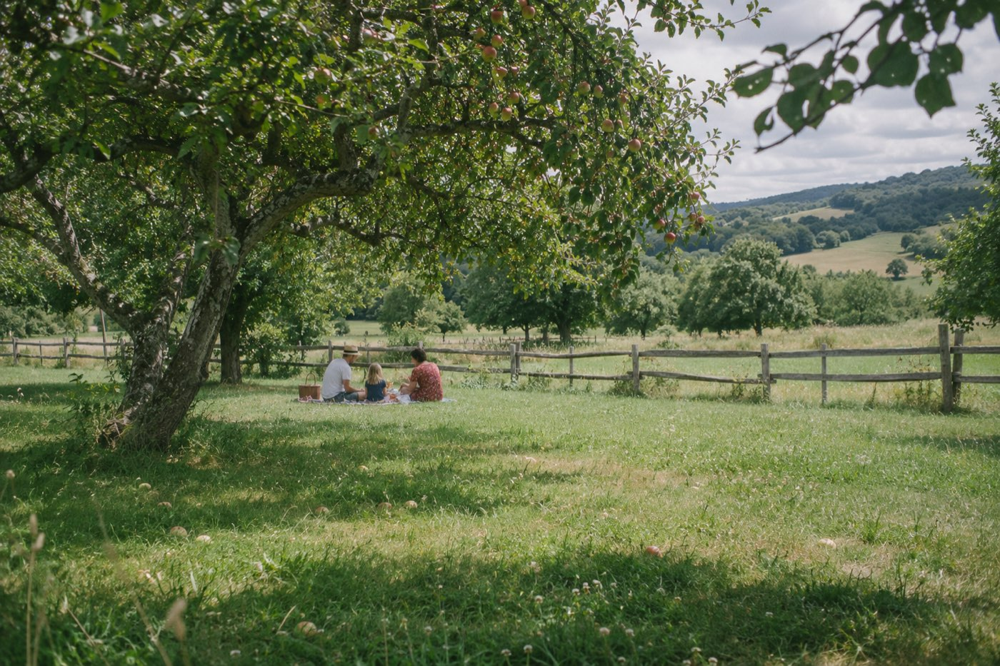

Momentro Guides · Family trips and events
How to film family trips and events without living behind your phone
You want to remember the afternoon. You also want to be in it. A few well-chosen clips can leave room for both.

You can stop filming before the moment is over
The candles are lit. Everyone starts singing, and you reach for your phone. A minute later, the cake has been cut and you realise you watched the whole thing through the screen.
It happens on trips too: another view from the car, another stretch of beach, another clip because the light might get better. You come home with plenty of footage and the feeling that you were always recording.
Try giving each scene a small job. Capture where you are, something happening, and a response. Once you have those pieces, there is room to put the phone away.
Take one view that tells you where you were
A wider shot gives the memory a home. It could be a garden before lunch, a station platform, the street outside your rented apartment, or the picnic blanket under a tree.
Hold the frame long enough for someone to understand it. You do not need to pan across the whole place or record every angle. One clear view often does more than several hurried sweeps.
On a day trip, you might make this clip when you arrive. At a family gathering, you can catch it before everyone sits down. Then join them.
Follow a small action through to its finish
A child tries to skim a stone. Someone opens a present. A friend finally finds the right turning. These moments already contain movement and a little curiosity.
Start when you notice something happening, keep the camera reasonably still, and let the action finish. Leave a little room for what comes just after: the laugh, the surprise, the look across the table.
You cannot catch everything. If the moment has passed before you take out the phone, let it stay a memory you experienced. There is no need to ask everyone to perform it again.
Keep a detail that belongs to this particular day
A windy tablecloth, rain against the train window, the sound of a familiar voice, or a muddy pair of shoes can bring a day back surprisingly clearly.
Choose details you actually noticed. You do not need a catalogue of coffee cups, doors and meals. A little ordinary footage helps when it says something about being there.
For a holiday afternoon, your small set might be the place you stopped, a shared activity, and the weather changing. For a birthday, it might be the room, the candles and a reaction. That gives you enough variety to begin a film later.
Share the filming without making it a job for everyone
If another person is already recording the main moment, you can enjoy it or catch one different view. There is usually no need for three phones to hold the same shot for the same minute.
A simple conversation helps: “Could you catch the candles? I would like to sit with her.” On a trip, take turns recording a few moments so the usual person behind the camera appears in the memory too.
Use the devices you already have. A phone may catch a conversation, a camera a distant view, and an action camera a stretch of the ride. You do not need to use every device at every stop, or add equipment to make the film feel complete.
Choose a few times when the phone stays away
You might record a little when you arrive, one activity later, and a quiet moment before leaving. That loose rhythm gives you a place to stop without watching the clock.
At dinner, during a conversation, or when someone would rather not be filmed, leave the camera alone. Ask before recording close personal moments, and respect a no. The film should feel comfortable to the people in it.
A useful stopping point: you can show the place, something happening, and how it felt. The rest of the day is yours to take part in.
Give the clips one home when you get back
Copy the footage from phones, cameras, cards and shared sources into a clearly named folder, and keep a separate backup. Leave the full originals safe while you choose a smaller set for the film.
When several devices have recorded a holiday or event, the files can add up quickly. Momentro works with selected footage on your computer, so you do not need to upload that collection to a cloud editing service for analysis and export.
Bring the selection into a project and start analysis. The time it takes depends on the footage and your computer, so you can unpack, make dinner or get on with your day while it runs. Come back to review the draft, make any adjustments you want, then start export. The computer can keep working while you do something else.
Bring home a few moments you want to watch again.
Momentro helps turn selected family and travel clips into a draft you can review and export on your computer.